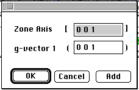

Distributed By: Virtual Labs
Experimental Zone Axis Dialog Box:
PATH...{SAD Object}:Exp.Info Menu::Ring/Line Methods::Zone Axis-Line
Method:<<double click>>
This dialog appears when the user double clicks on the Zone Axis Box when
using Desktop to develop Pole Figures or to determine experimental orientation
relationships.

The Zone Axis initially input is the one Desktop has determined. To
change it simply type in the new [uvw] values. The g-vector corresponds
to the perpendicular bisector of the line labelled 1 on the Zone Axis Tool.
Clicking on Add will Add this crystal orientaiton to a Stereographic Projection.
Zone Axis Tool.
Author: J.ames
T. Stanley
 Desktop
Manual:Dialog Boxes
Desktop
Manual:Dialog Boxes
Distributed By: Virtual Labs
Last Updated:1/12/96 Sat, Apr 27, 1996